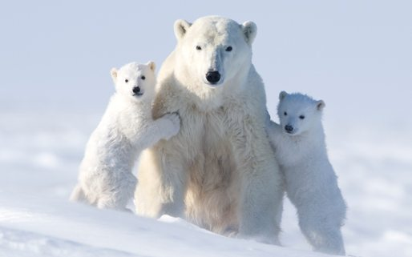

About
This game is designed to raise awareness on the issues of global warming and more specifically the problems that polar bears and other arctic animals must face because of human carelessness. We encourage you to help and make the world a better place. Please donate to adopt a polar bear. Animal adoptions not only help to fund work with local communities to reduce human-bear conflict, and projects to reduce the impacts of climate change, but also fund our other vital work around the world. Adopt now at: https://support.wwf.org.uk/adopt-a-polar-bear
